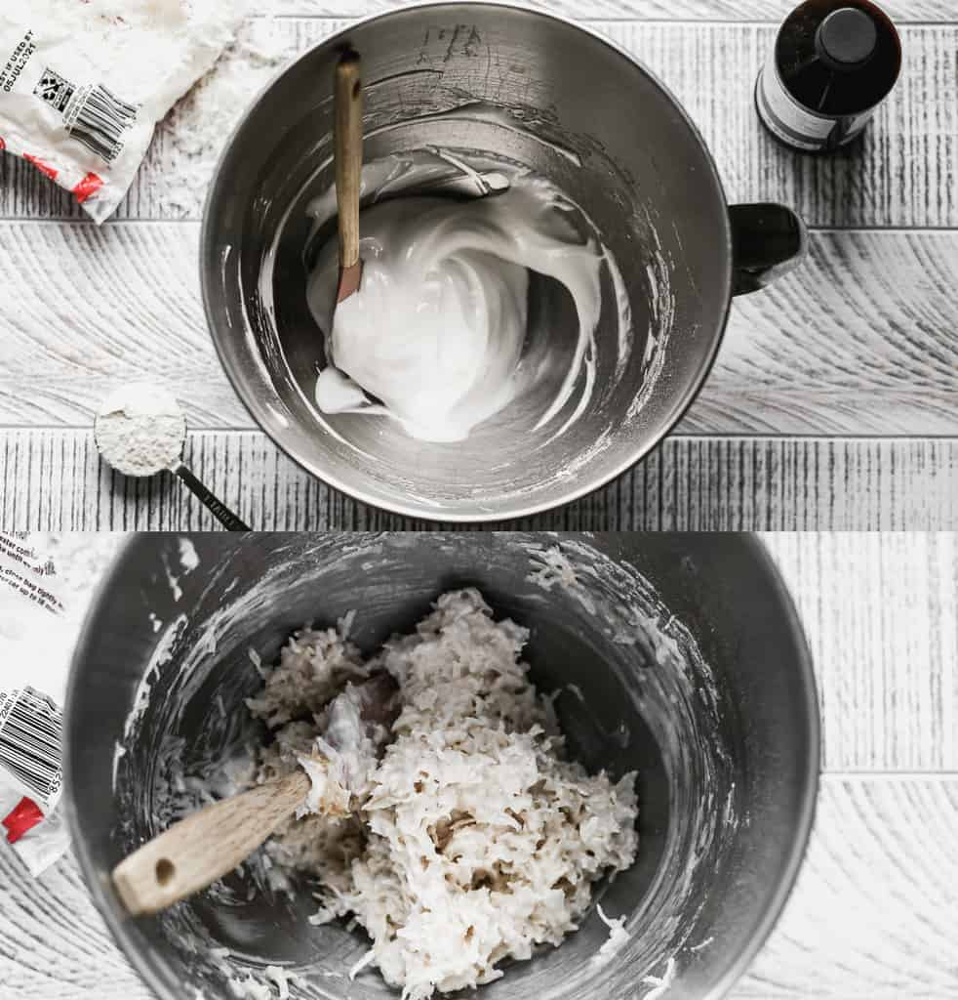
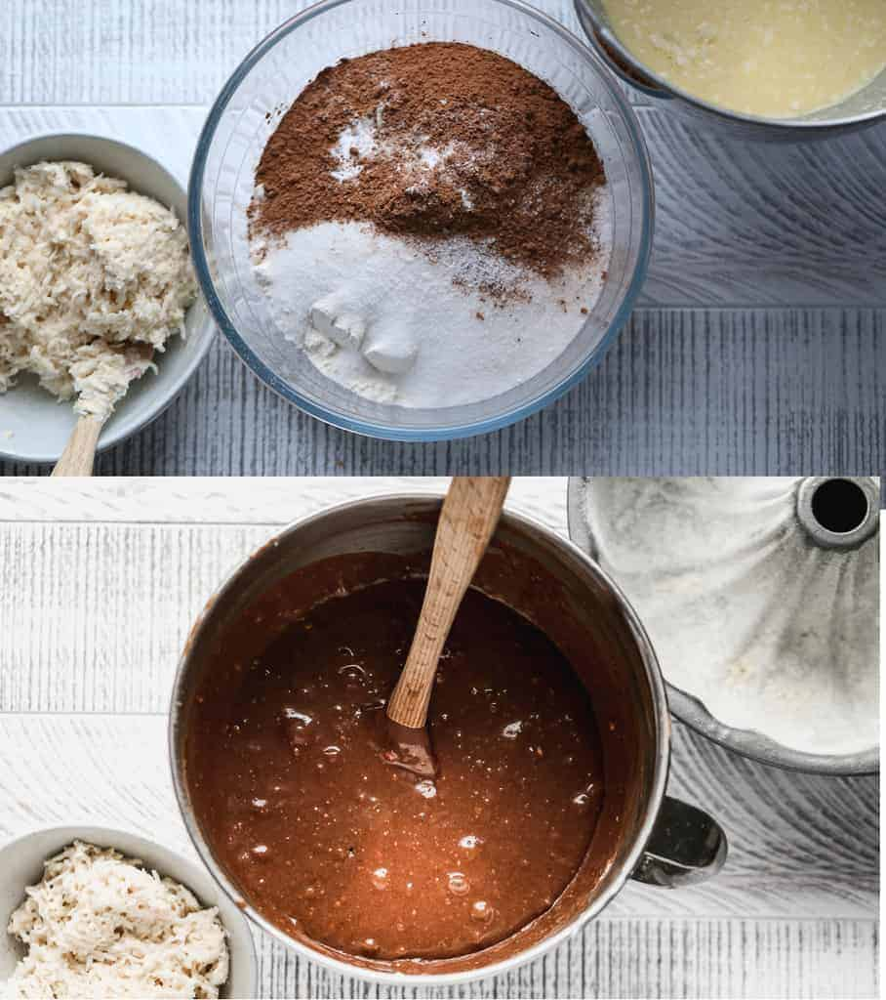
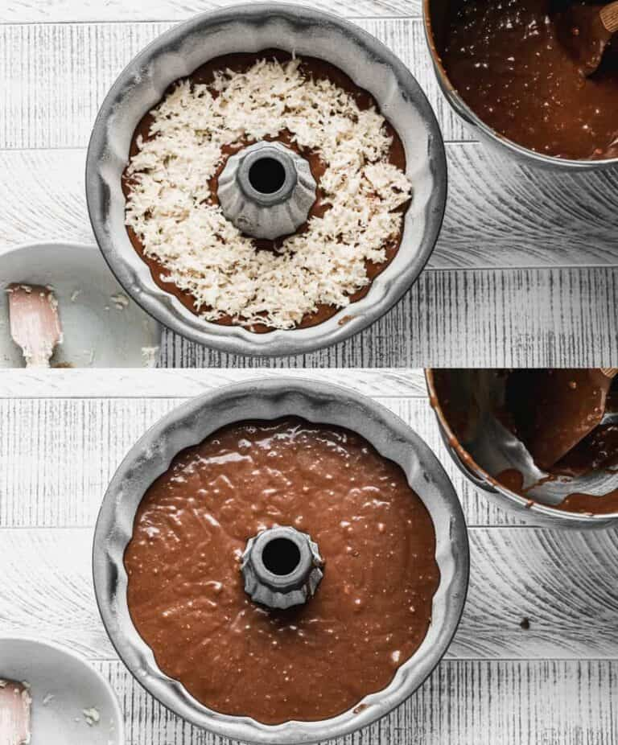

Ingredients
For the Cake:
- 2 cups all-purpose flour
- 1 3/4 cups granulated sugar
- 1/2 cup unsweetened cocoa powder
- 1 teaspoon baking soda
- 1 teaspoon salt
- 3/4 cup sour cream
- 3 large eggs
- 1 large egg yolk (reserve the egg white for the filling)
- 2 teaspoons vanilla extract
- 1/2 cup shortening
- 3/4 cup water
For the Coconut Macaroon Filling:
- 1 large egg white
- 1/4 cup granulated sugar
- 1 cup shredded sweetened coconut
- 1 Tablespoon all-purpose flour
- 1 teaspoon vanilla extract
For the Glaze:
- 1/4 cup butter
- 3 Tablespoons milk
- 2 cups powdered sugar
- 1 1/2 Tablespoons unsweetened cocoa powder
Instructions
For the Coconut Filling:
-
In a small bowl, beat egg white (reserve the egg yolk for the cake batter) until soft peaks form. Gradually add the sugar; beat until stiff peaks form. Fold in the coconut, flour and vanilla. Set aside.
For the Cake:
- In large mixing bowl, combine the flour, sugar, cocoa powder, salt, baking soda.
-
In a separate bowl mix together the sour cream, eggs, egg yolk, vanilla and shortening. Add to the dry ingredients, along with the water and mix to combine.
-
Prepare a bundt pan by greasing the inside with a thin layer of shortening, and then a thin layer of flour. Pour half of the cake batter into the pan and smooth into an even layer.
-
Spoon the coconut macaroon filling into a line in around the center of the batter. Spoon remaining batter on top, covering all of the coconut filling.
- Bake at 350° F for 40-50 minutes, or until a toothpick inserted into the center of the cake comes out clean.
- Cool for 10 minutes in the pan, then turn out onto a wire cooling rack to cool completely.
For the Glaze:
- Add butter, milk and cocoa powder to a small saucepan over medium heat. Bring to a low boil and then remove from heat.
- Stir in 2 cups of powdered sugar and mix until smooth. Spoon glaze over cake.
Homemade:
How to Make the Coconut Filling:
-
In a small bowl, beat egg white (reserve the egg yolk for the cake batter) until soft peaks form. Gradually add the sugar; beat until stiff peaks form. Fold in the coconut, flour and vanilla. Set aside.

How to Make a Cake:
- In large mixing bowl, combine the flour, sugar, cocoa powder, salt, baking soda.
- In a separate bowl mix together the sour cream, eggs, egg yolk, vanilla and shortening.
- Add to the dry ingredients, along with the water and mix to combine.

-
Prepare a bundt pan by greasing the inside with a thin layer of shortening, and then a thin layer of flour. Pour half of the cake batter into the pan and smooth into an even layer.
-
Spoon the coconut macaroon filling into a line in around the center of the batter. Spoon remaining batter on top, covering all of the coconut filling.

- Bake at 350° F for 40-50 minutes, or until a toothpick inserted into the center of the cake comes out clean.
- Cool for 10 minutes in the pan, then turn out onto a wire cooling rack to cool completely.
For the Glaze:
- Add butter, milk and cocoa powder to a small saucepan over medium heat. Bring to a low boil and then remove from heat.
- Stir in 2 cups of powdered sugar and mix until smooth. Spoon glaze over cake.

Notes
- The entire cake can be made and stored (wrapped well) in the refrigerator for 1-2 days in advance. Freeze for up to 3 months.
Nutrition
| Calo: 489kcal |
Carbohydrates: 75g |
Protein: 5g |
Fat: 20g |
| Saturated Fat: 10g |
Cholesterol: 66mg |
Natri: 315mg |
Kali: 140mg |
| Fiber: 2g |
Sugar: 59g |
Vitamin A: 310IU |
Vitamin C: 0.2mg |
| Canxi: 32mg |
Iron: 1,8 mg |